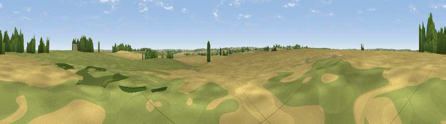

Rupert's Viewpoint
#43281 in England · top 93% of its area beats it · near East FarndonThe view, rendered

A 360° render of this exact spot computed from the terrain model, tree cover and land cover — summer colours, afternoon light, calibrated against photographs of famous viewpoints. Real trees, hedges and buildings will differ in detail.
The panorama
Grey silhouette: terrain skyline in each direction (720 bearings, Earth curvature and refraction included). Dashed green: skyline with trees (+15 m) and buildings (+8 m) as obstacles. Blue strip: how far the ground is visible on each bearing.
Where the view opens
Wedge length = distance to the farthest visible ground on that bearing (vegetation-aware). Rings at 10, 25 and 50 km.
What fills the view
55% cropland · 41% grassland · 3% woodland
Angular shares of the visible panorama (visual magnitude), not map area. Landscape diversity 0.36 (0–1 Shannon).
Key numbers
More beautiful places nearby
The staircase of upgrades: each row has a higher view potential than everything closer. Driving times are estimates from straight-line distance, calibrated against real road routing — check an actual route before setting out.
| Place | Direction | Drive | Score |
|---|---|---|---|
| Viewpoint near East Farndon | N · 1 km | ~3 min | 37.8 |
| Viewpoint near East Farndon | NNW · 1 km | ~4 min | 41.4 |
| Viewpoint near Great Oxendon | ENE · 2 km | ~6 min | 41.6 |
| Viewpoint near Sibbertoft | WSW · 3 km | ~6 min | 48.3 |
| Viewpoint near Sibbertoft | WSW · 3 km | ~7 min | 48.8 |
| Viewpoint near Cold Ashby | SW · 11 km | ~21 min | 61.7 |
| Viewpoint near Burrough on the Hill | N · 28 km | ~45 min | 66.0 |
| Big Hill - Staverton Clump | SW · 28 km | ~45 min | 68.4 |
52.45099, -0.94716 · source: osm viewpoint · position refined by local search. Computed location — check access rights before visiting.